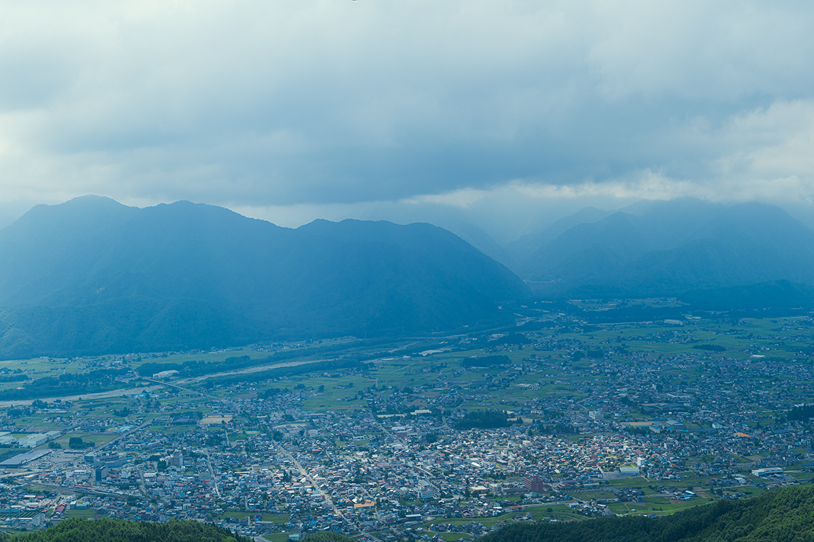
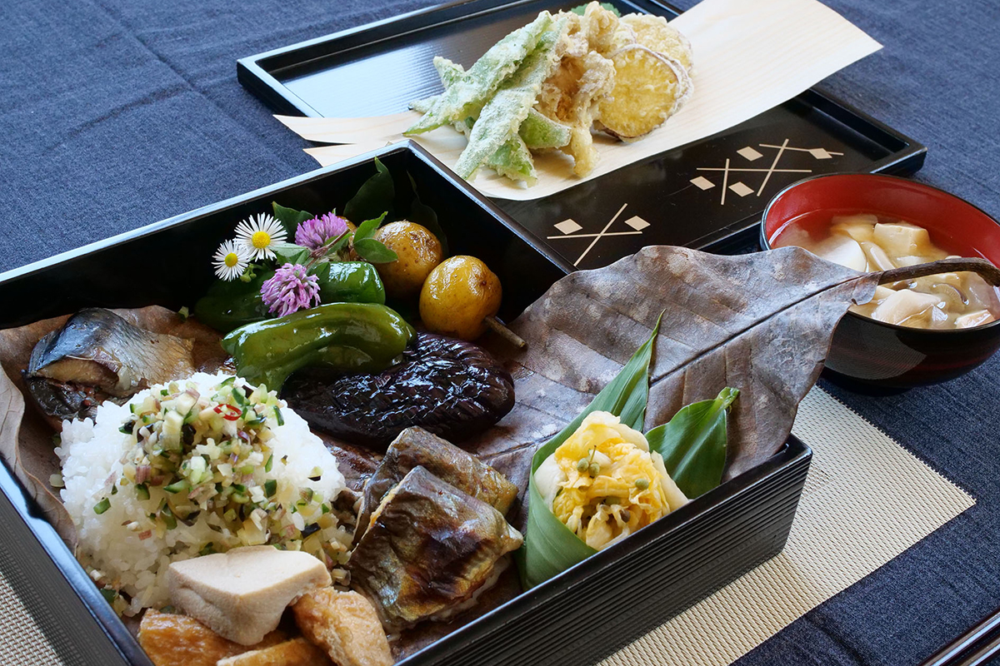
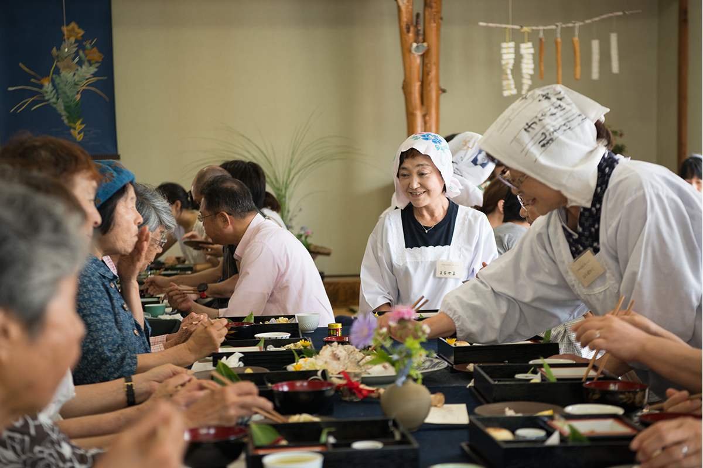
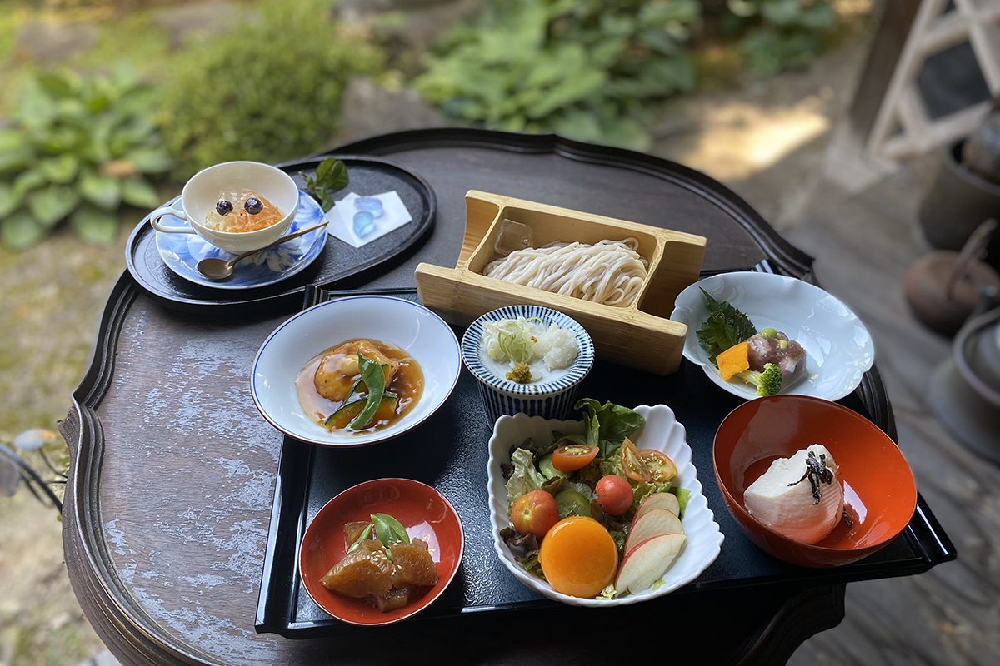
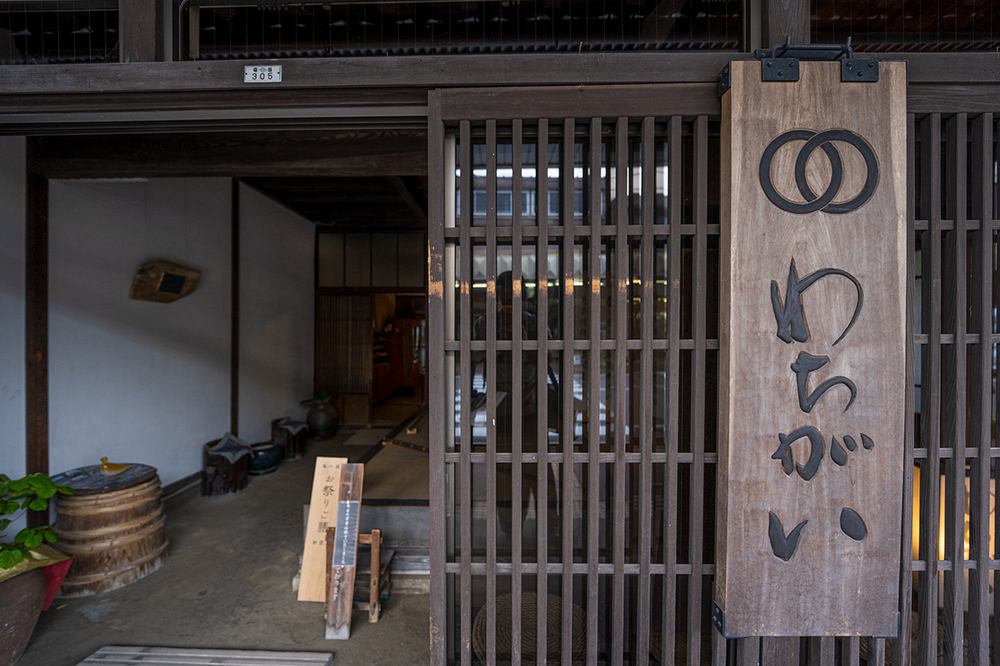
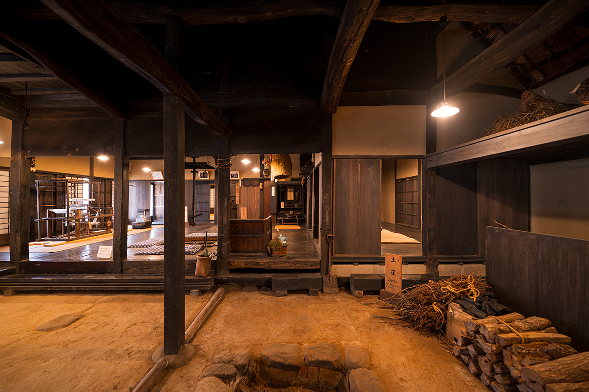
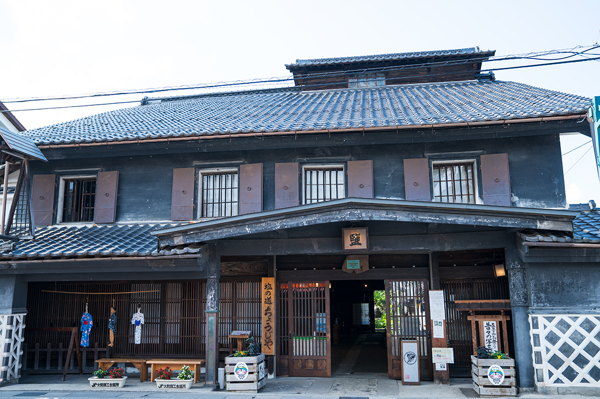

Префектура Нагано · Омати · еда и культура
Омати у подножия Северных Альп: еда, виды и старые дома

Омати лежит на северо-западе префектуры Нагано, у самого подножия Северных Альп. Зимы здесь суровые, поэтому у города своя кухня из запасов, а его улицы помнят времена, когда через них везли соль с Японского моря.
Еда
Кухня долгой зимы
Осенью 2024 года Омати принимал Международный художественный фестиваль Северных Альп, который проходит раз в три года, но ради еды, видов и истории сюда стоит ехать и без него. Климат у подножия гор дарит щедрый урожай, а холодная зима научила местных хозяек делать запасы впрок. Здесь делают «коримоти», рисовые лепёшки, высушенные на морозе, и «симидайкон», дайкон, который вымораживают зимой.
Как готовят хозяйки Омати, в 2024 году показывало кафе YAMANBA, открытое на время фестиваля. Компания местных мастериц собрала «сёкадо-бэнто», обед в коробке с отделениями, из соленьев и сушёных припасов, грибов и риса нового урожая, а подавали его под рассказы о местных народных преданиях. В кафе к чаю были «ояки», пирожки с начинкой, и «амадзакэ», сладкий напиток из рисовой закваски.


Ресторан
«Сося Ватигаи»: обед в старом городском доме
Ресторан занимает городской дом эпохи Мэйдзи (1868–1912), где когда-то жила семья деревенского старосты. Здесь подают собственную лапшу «Ватигаи дзадза» из пшеницы, выращенной только в префектуре Нагано. Стоит попробовать и праздничный обед «Сио-но мити о-мацури годзэн»: это блюда эпохи Эдо, переложенные на современный лад, из тех времён, когда через город шла Солевая дорога. В 2024 году он стоил от 2900 иен, заказывать его нужно заранее.

К обеду можно заказать дегустационный сет сакэ трёх местных сакэварен. На втором этаже устроена галерея, где показывают ремёсла местных мастеров.

«Сося Ватигаи»
- Адрес
- префектура Нагано, Омати, Каминакамати, 4084
- Телефон
- +81 261-23-7363
- Часы работы
- 10:00–15:30 (последний заказ), только по предварительной записи
- Выходные
- вторник, четвёртый понедельник месяца
Вид
Гора Такагари: город и горы с одной точки
Смотровая площадка на горе Такагари стоит над восточной окраиной Омати. Отсюда видна вся цепь Северных Альп, а под ней город, раскинувшийся по веерообразной равнине у выхода рек из гор. В зависимости от сезона и погоды можно застать осеннюю листву в красных тонах или море облаков внизу.
Смотровая площадка горы Такагари
- Адрес
- префектура Нагано, Омати, Ясака, 8583-2
- Телефон
- +81 261-26-2001
Дом
Старый дом семьи Накамура
Этот крестьянский дом признан важным культурным достоянием Японии. Здесь знакомятся с крестьянской жизнью Омати: стоит посмотреть и саму постройку с конюшней, и постоянную экспозицию о сельском хозяйстве края.

Старый дом семьи Накамура
- Адрес
- префектура Нагано, Омати, Миаса, 17668
- Телефон
- +81 261-29-2580
- Часы работы
- 9:00–17:00 (вход до 16:30)
- Выходные
- понедельник и вторник (если это праздник, то два следующих дня), с декабря по март закрыто на зиму
- Цены / Вход
- взрослые 310 иен
История
Тёдзия: город на Солевой дороге
Омати был почтовой станцией на «Сио-но мити», Солевой дороге. По ней соль везли от Итоигавы на побережье Японского моря через горы в Мацумото. В музее «Сио-но мити Тёдзия» при зале «Ябусамэ кайкан» об этом пути рассказывают старые вещи, в том числе снаряжение, с которым носили и возили груз.

«Сио-но мити Тёдзия», «Ябусамэ кайкан»
- Адрес
- префектура Нагано, Омати, Омати, 2572
- Телефон
- +81 261-22-4018
- Часы работы
- 9:00–16:00 (вход до 15:30)
- Выходные
- среда
- Цены / Вход
- взрослые 500 иен
Фото: Томоаки Окуяма.